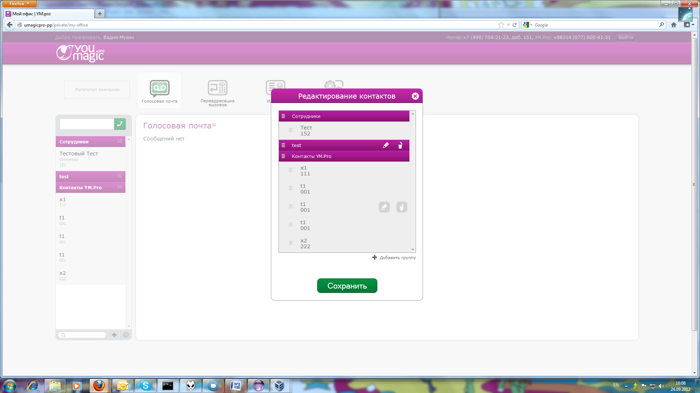

| Selenium-Command | Parameter-1 | Parameter-2 | Res.RC | Res.Selenium | Time [ms] | Calling-Class with Linenumber |
| executing createNewLoggingSelenium() |
| windowFocus | | | OK | OK | 19 | com.test.fw.SeleniumHelper#69 |
| windowMaximize | | | OK | OK | 34 | com.test.fw.SeleniumHelper#70 |
| executing getSelenium() |
| getLocation | | | OK | http://localhost:4444/selenium-server/core/Blank.html?start=true | 24 | com.test.fw.SeleniumHelper#30 |
| executing phoneAddGroupAndCancelTest() |
| open | http://umagicpro-pp | | OK | OK | 2436 | com.LKS_Tests.PhoneAddFiveNumbersForContactTest#10 |
| click | css=span | | OK | OK | 27 | com.LKS_Tests.PhoneAddFiveNumbersForContactTest#11 |
| waitForPageToLoad | 30000 | | OK | OK | 1312 | com.LKS_Tests.PhoneAddFiveNumbersForContactTest#12 |
| type | id=edit-name-1 | 0776004151 | OK | OK | 34 | com.LKS_Tests.PhoneAddFiveNumbersForContactTest#13 |
| type | id=edit-pass-1 | 1234 | OK | OK | 16 | com.LKS_Tests.PhoneAddFiveNumbersForContactTest#14 |
| click | id=edit-submit-1 | | OK | OK | 65 | com.LKS_Tests.PhoneAddFiveNumbersForContactTest#15 |
| waitForPageToLoad | 30000 | | OK | OK | 27057 | com.LKS_Tests.PhoneAddFiveNumbersForContactTest#16 |
| click | css=a.bPopup__eClose.instructions-close | | OK | OK | 47 | com.LKS_Tests.PhoneAddFiveNumbersForContactTest#17 |
| click | //div[@id='block-umagicpro_contacts-0']/div/div/table/tbody/tr/td[2]/a | | OK | OK | 6639 | com.LKS_Tests.PhoneAddFiveNumbersForContactTest#18 |
| type | id=edit-contact-first-name | t1 | OK | OK | 37 | com.LKS_Tests.PhoneAddFiveNumbersForContactTest#20 |
| type | id=edit-contact-telephone1 | 001 | OK | OK | 24 | com.LKS_Tests.PhoneAddFiveNumbersForContactTest#21 |
| type | id=edit-contact-telephone2 | 002 | OK | OK | 16 | com.LKS_Tests.PhoneAddFiveNumbersForContactTest#22 |
| type | id=edit-contact-telephone3 | 003 | OK | OK | 6 | com.LKS_Tests.PhoneAddFiveNumbersForContactTest#23 |
| type | id=edit-contact-telephone4 | 004 | OK | OK | 5 | com.LKS_Tests.PhoneAddFiveNumbersForContactTest#24 |
| type | id=edit-contact-telephone5 | 005 | OK | OK | 4 | com.LKS_Tests.PhoneAddFiveNumbersForContactTest#25 |
| click | id=edit-save | | OK | OK | 15 | com.LKS_Tests.PhoneAddFiveNumbersForContactTest#26 |
| click | //div[@onclick='callByContacts("005"); return false;'] | | OK | OK | 85 | com.LKS_Tests.PhoneAddFiveNumbersForContactTest#28 |

automaticErrorScreenshot2012-09-24_16-08.png | 325 | com.LKS_Tests.PhoneAddFiveNumbersForContactTest#30 |
| click | css=span.ui-icon.ui-icon-closethick | | ERROR | com.thoughtworks.selenium.SeleniumException - ERROR: Element css=span.ui-icon.ui-icon-closethick not found | 332 | com.LKS_Tests.PhoneAddFiveNumbersForContactTest#30 |
| executing dismissSelenium() |
| close | | | OK | OK | 1248 | com.test.fw.SeleniumHelper#79 |
{kind=link}